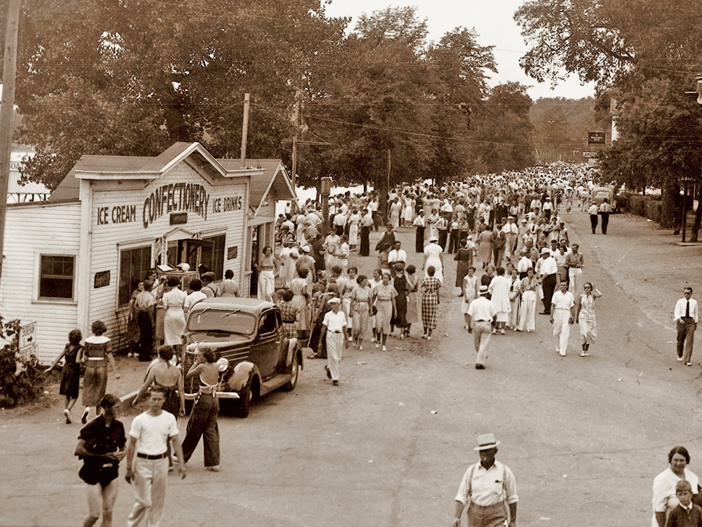

El desarrollo del Área de los Lagos de Detroit comenzó en 1871, cuando el Ferrocarril del Pacífico Norte se abrió camino hacia el oeste a través del condado de Becker. Los colonos del este llegaron a este nuevo territorio para descubrir una pequeña comunidad rural llamada Tylerville o Tyler Town. Tylerville consistía en una colección de edificios cerca de la cabaña del Sr. Merwin Tyler, que estaba ubicada junto a la línea del Pacífico Norte donde el río Pelican se encuentra con el lago Detroit. La cabaña de 12 por 14 pies de Tyler también sirvió como hotel local y oficina de correos. El correo, traído por Northern Pacific Railroad, se vació en una cama para que los lugareños se sirvieran. Detroit Lakes fue fundado por el coronel George Johnston, quien llegó a Minnesota en 1871 para seleccionar tierras para la colonia de Nueva Inglaterra. Después de extensos exámenes, Johnston numeró las secciones que establecieron el municipio de Detroit. En 1873, el municipio de Detroit se jactó del primer almacén de granos construido al oeste de Duluth en el Ferrocarril del Pacífico Norte. La ciudad de Detroit Lakes, originalmente llamada Detroit, comenzaba al norte de las vías del tren y gradualmente se extendía hacia el sur hasta Detroit Lake. El nombre Detroit surgió cuando un sacerdote católico francés acampó en la orilla del lago con una vista de la puesta de sol sobre el agua. El agua estaba baja y revelaba un banco de arena, creando un estrecho estrecho que brillaba a la luz del sol poniente. El sacerdote exclamó: “Qué hermoso estrecho”. La palabra estrecho en francés es detroit. En consecuencia, la ciudad se llamó Detroit. Old Red River Road, la primera carretera en el condado de Becker, serpenteaba a través del pueblo de Detroit. El castor y otros animales con pelaje quedaron fuertemente atrapados en todo el noroeste de Minnesota a principios del siglo XIX. Hay evidencia escrita de los primeros viajeros y cazadores de que este camino se viajó antes de 1840. Desde la década de 1830 hasta la de 1860, uno de los tres ramales de los senderos Red River Ox Cart atravesaba el pueblo de Detroit. En aquellos días, Detroit era un pueblo de unos pocos cientos de personas, donde las manadas de lobos aullaban en las calles por la noche y los osos eran una vista común. El pueblo de Detroit, que sirvió como sede del condado de Becker, se incorporó en 1881. La industria telefónica se introdujo en Detroit en mayo de 1884 con seis teléfonos en funcionamiento: Hotel Minnesota, Lakes Hotel, Northern Pacific Depot, el banco, el edificio del condado y la oficina del periódico The Record. Hasta 1885, la lucha contra incendios estuvo a cargo de los primeros colonos que trabajaron juntos en brigadas de baldes. En 1885, el condado compró equipo contra incendios y se construyó el ayuntamiento con espacio para almacenar el vagón de productos químicos. El nuevo departamento de bomberos se encargó de varios incendios grandes, incluido el incendio de la Casa de la Ópera Holmes en 1888, un incendio en 1914 que destruyó 22 edificios y luego la trágica pérdida del hermoso Hotel Minnesota, un elegante hotel de cuatro pisos. Fargo-Detroit Ice Company, la primera empresa a gran escala que operó fuera del área, anunciaba su hielo como prácticamente puro de materia orgánica. Proporcionaron hielo para el Northern Pacific Railroad y embotellaron Pokegama Spring Water, que el ferrocarril usó exclusivamente en sus vagones restaurante durante muchos años. Como resultado de continuas confusiones postales entre Detroit, Minnesota y la más conocida Detroit, Michigan, el 7 de septiembre de 1926 se llevó a cabo una elección especial para cambiar el nombre de la ciudad a Detroit Lakes. Este título acorde se ha mantenido desde entonces.
© Gabriela Avila 2022